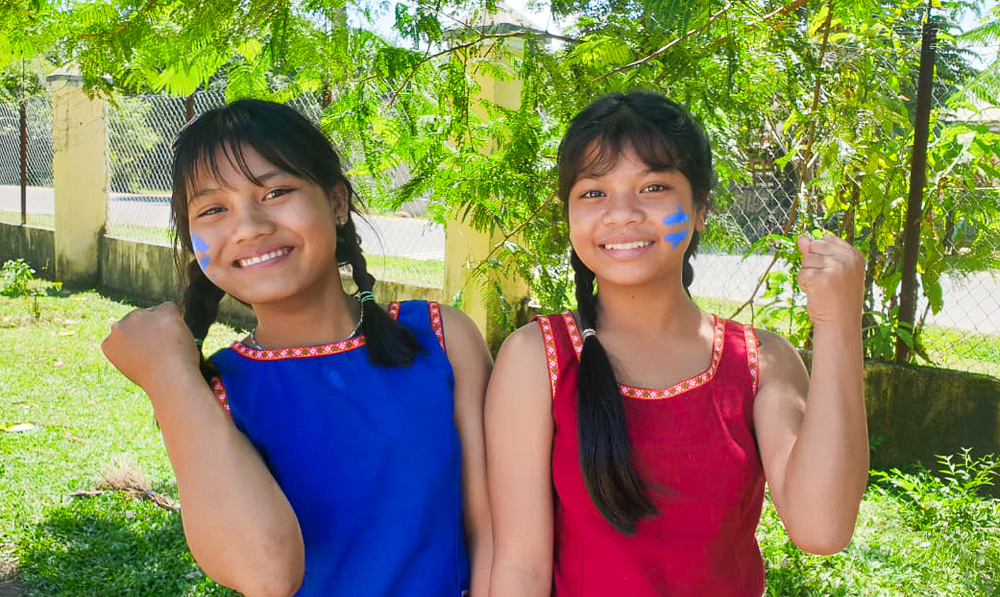

La réflexion générale sur le jeu dans son ensemble prendra environ 15 à 20 minutes. À l'aide de quelques questions, nous réfléchirons aux actions (passées et présentes), aux nouvelles connaissances et aux sentiments avant/pendant/après le jeu.
Cette réflexion se fait avec toutes les équipes réunies.
Fournitures
- Une grande feuille de papier ou un tableau blanc
- Une grande feuille de papier ou un tableau blanc
- Stylo ou crayon
Sentiments
Tout d'abord, réfléchissez à vos sentiments avant, pendant et après le jeu. Sur une grande feuille blanche/un tableau blanc, tracez trois colonnes avec les termes : avant, pendant et après. Chaque joueur prend trois post-it et écrit sur chaque post-it la réponse aux trois questions suivantes. Collez vos réponses sur le papier blanc/le tableau blanc.
Les questions
- Décrivez le sentiment que vous avez eu avant de jouer au jeu de société sur l'étiquetage.
- Décrivez le sentiment que vous avez eu en jouant au jeu de société sur l'étiquetage.
- Décrivez le sentiment que vous avez eu après avoir joué au jeu de société sur l'étiquetage.
- Comparez ces sentiments entre eux, qu'est-ce qui a changé ?
Une fois que tout le monde a fait cela, lisez les différents sentiments présents sur la grande feuille blanche/le tableau blanc. Quels sentiments vous surprennent? Lesquelles tu peux comprendre, lesquelles tu ne peux pas? Lesquelles doivent être clarifiées?
Actions

Ensuite, réfléchissez aux actions que les joueurs ont faites dans le passé et comment ils ont changé maintenant. Sur une nouvelle grande feuille blanche/un tableau blanc, faites un tableau à deux colonnes pour les termes passé et présent. Chaque joueur prend deux post-it et répond à une question sur chaque post-it. Collez vos réponses sur le papier blanc/le tableau blanc.
Les questions
- Citez une action que vous avez faite dans le passé et dont vous réalisez maintenant qu'elle est mauvaise.
- Quel changement apporteriez-vous à cette action maintenant ?
Une fois que tout le monde a fait cela, lisez les différentes actions présentes sur la grande feuille blanche/le tableau blanc. Quelles actions vous surprennent? Lesquelles tu peux comprendre, lesquelles tu ne peux pas? Lesquelles doivent être clarifiées?
Connaissances


Enfin, réfléchissez aux nouvelles connaissances que les joueurs ont acquises en jouant le jeu. Prenez une nouvelle grande feuille blanche/un tableau blanc avec le titre nouvelles connaissances. Chaque joueur prend deux post-it et répond à une question sur chaque post-it. Si vous voulez en noter plusieurs, vous pouvez prendre des post-it supplémentaires. Collez votre réponse sur le papier blanc/le tableau blanc.
Les questions
- Quels sont les nouveaux concepts et sujets que vous avez appris?
- Comment allez-vous appliquer ces concepts et ces sujets à votre vie quotidienne?
Une fois que tout le monde a fait cela, lisez les différentes réponses présentes sur la grande feuille blanche/le tableau blanc. Voyez-vous certains concepts et sujets apparaître plusieurs fois ? Certaines réponses vous surprennent-elles? Y a-t-il des réponses que vous pouvez comprendre? Lesquels ne le font pas? Lesquelles doivent être clarifiées?